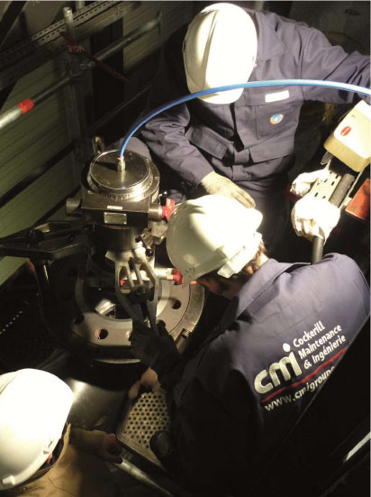

<!DOCTYPE html>
<html>
<head>
    <title></title>
    <!-- Meta Tags -->
    <!-- External CSS -->
    <link rel="stylesheet" type="text/css" href="less/style.css">
    <meta name="viewport" content="width=device-width">
    <meta charset="utf-8">
    <!-- External javascript -->
    <script src="js/jquery-2.0.3.min.js" type="text/javascript"></script>
    <script src="js/script.js" type="text/javascript"></script>
</head>
<body>
    <div id="wrapper">
        <div class="inner">
            <header>
                <div class="text">
                    COCKERILL MAINTENANCE & INGENIERIE
                </div>
                <div class="logo">
                </div>
                <div class="viz">
                </div>
            </header>
            <div class="inner">

                <!-- end of header -->
                <div id="content">
                    <div class="left">
                        <div class="inner">
                            <div class="padd">
                                <p>
                                    <strong>
                                        CMI designs, upgrades and services equipment for Energy, Defence,
                                        Steelmaking and other industry markets and aims to improve economic, technical
                                        and environmental performance of industrial equipment throughout its life- cycle.
                                    </strong>
                                </p>
                                <p>
                                    Supported by some 3 400 members of staff, the Group boasts operational units in
                                    Brazil, China, Europe, India, Russia and the US, supported by an international marketing and sales network.
                                </p>
                                <p>
                                    CMI masters technologies as welding, machining, assembly commissioning of industrial equipment. It could be involved by
                                    <strong>workshop and site activities in rang 2 or 3 on various main and peripherical components of the reactor.</strong>
                                </p>
                                <p>
                                    <ul class="square_list">
                                <p>
                                    <li>
                                         <strong>Large experience in the nuclear field: </strong>
                                        reactor vessel, steam generator, pressurizer, accumulator, containers, temporary reactor heads…
                                    </li>
                                </p>
                                <p>
                                    <li>
                                         <strong>Dedicated Business Unit </strong>
                                        (CMI Muon and its 4 agencies) and
                                        <strong>significant references </strong>
                                        ( EDF and Electrabel)
                                    </li>
                                </p>
                                <p>
                                    <li>
                                        &nbsp;About 1000 members in France and Belgium specialized for interventions and proximity services: <br />
                                        <ul class="dash">
                                            <li>Engineering and Project management  </li>
                                            <li>Inspection, assessments and analyses </li>
                                            <li>Preventive, corrective and global maintenance </li>
                                            <li>Valves, fittings and Pipe-work </li>
                                            <li>Manufacturing and repairs Engineering </li>
                                            <li>Surface treatment and parts cleaning </li>
                                            <li>Machining and welding(shop and site)  </li>
                                            <li>Heavy components site assembly </li>
                                            <li>Turbines, rotating machines, diesel engines</li>
                                        </ul>
                                    </li>
                                </p>
                                <p>
                                    <li>
                                        <strong>&nbsp;Relevant qualifications: </strong>&nbsp;
                                        ISO 9001, ISO 14001, ASME 3, CEFRI, UTO
                                    </li>
                                </p>

                                </ul>
                                </p>
                                <div></div>
                                &nbsp;<br />
                            </div>
                        </div>
                    </div>
                    <div class="right">
                        
                        
                        <p>Clean (white) machine shop</p>
                        
                        <p>Site assembly and maintenance </p>
                        
                        <p>Radioactive waste container (design  and manufacturing) </p>
                        <div class="clear">
                        </div>
                        <br /><br /><br />
                        <strong>Contacts</strong><br/>
                        CMI Muon, dedicated BU:<br />
                        <a href="services.nuclear@cmigroupe.com">services.nuclear@cmigroupe.com</a><br/>
                        <a href="andre.mathonet@cmigroupe.com">andre.mathonet@cmigroupe.com</a><br/> 
                        <a href="aldo.gressani@cmigroupe.com">aldo.gressani@cmigroupe.com</a><br />
                        Tel:  + 32 4 330 22 43 <br />
                        <a href="www.cmigroupe.com ">www.cmigroupe.com</a><br /><br />
                        Avenue Greiner 1<br />
                        B-4100 Seraing<br />
                        Belgium<br />

                    </div>
                    <div class="clear">
                    </div>
                </div>
                <!-- end of #content -->
                <footer></footer>
                <!-- end of footer -->
                <div class="sideline">
                </div>
            </div>


        </div>
    </div>
</body>
</html>
